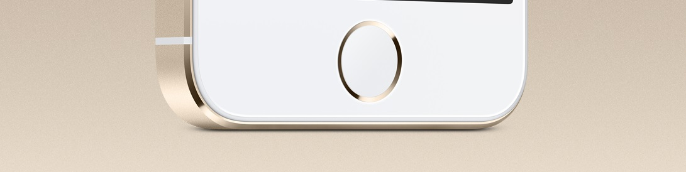
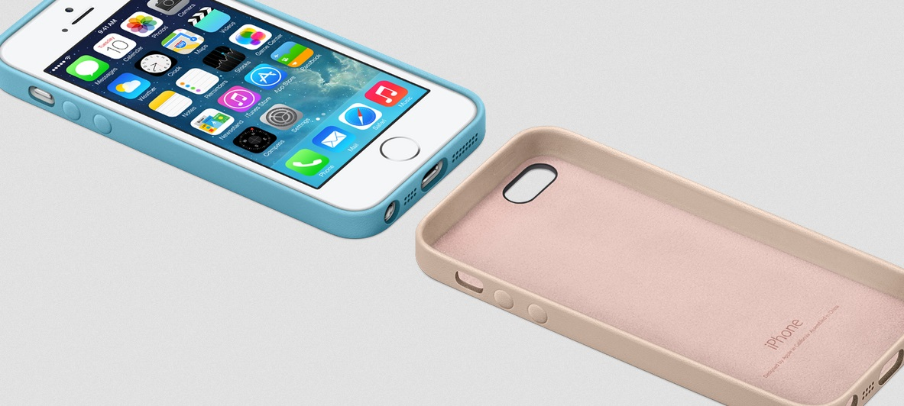
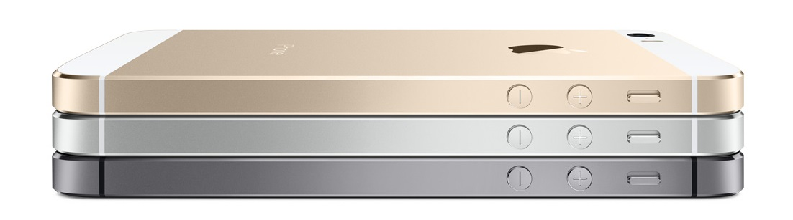

Gândire de avangardăiPhone 5s este imaginat cu un scop clar. Proiectat cu meticulozitate. Executat cu precizie. Nu este doar un produs al posibilităților tehnologice. Ci al utilității tehnologiei. Nu este doar ce urmează. Ci ceea ce ar trebui să urmeze.  Tehnologia cea mai avansată duce aiciiPhone 5 a setat un precedent, oferind un volum uluitor de tehnologie într-un design remarcabil de subțire și ușor. iPhone 5s continuă acest palmares cu Touch ID - senzor identificare amprentă nou. Un cip A7 cu arhitectură pe 64 de biți. O cameră iSight și mai impresionantă. Şi conexiuni ultrarapide. iOS7. Proiectat să facă o pereche reușită cu iPhone5SiPhone 5s este primul smartphone pe 64 de biți din lume. Iar iOS 7 a fost conceput special pentru arhitectura pe 64 de biți. Astfel, iOS 7 este la fel de avansat ca iPhone-ul pe care rulează. Un telefon minunat merită o husă pe măsurăiPhone 5s Case este concepută să se potrivească perfect pe iPhone. Fiind fabricată din piele de calitate superioară, întruchipează eleganța absolută. În interior, o căptușeală moale din microfibră îți protejează telefonul iPhone 5s.  De neconceput până acum. Indispensabil de acum înainteCip cu arhitectură pe 64 de biți. Senzor identificare amprentă nou. O cameră mai bună și mai rapidă. Și un sistem de operare construit special pentru 64 de biți. Orice smartphone cu măcar una dintre aceste caracteristici ar fi revoluționar. Un smartphone cu toate aceste caracteristici devine un iPhone care e categoric înaintea timpului său. 
Disponibil pe argintiu și gri.iPhone 5s este precizia întruchipată - la nivel de micron. Și asta se observă în fiecare detaliu. Frumoasa carcasă de aluminiu. Eleganța metalului și a sticlei. Cristal de safir în butonul pentru Pagina principală. Încă și mai multe cristale de safir care protejează camera iSight. La acest nivel de design și construcție, nu are egal. Drept urmare, iPhone 5s arată și se simte incredibil de subțire și de ușor. Și este disponibil în 3 culori elegante: auriu, argintiu și gri stelar. |